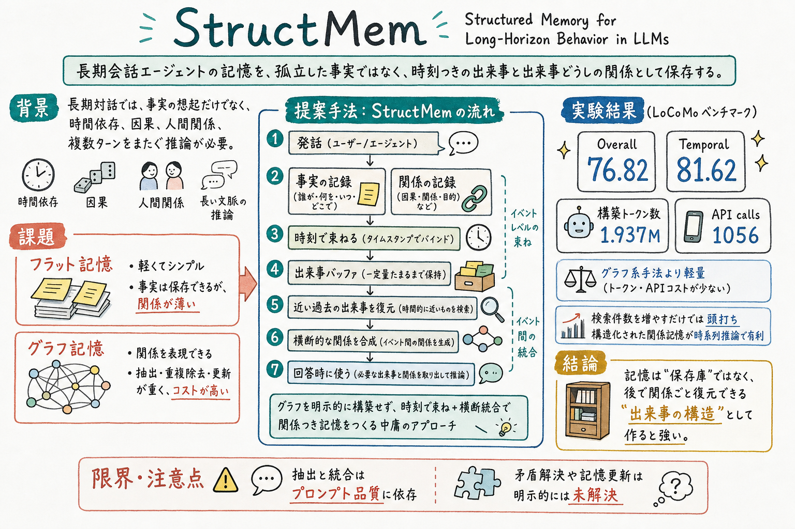

各発話から factual entries と relational entries を抽出し、同じ timestamp に結びつけることで、事実と関係を同じ出来事として扱う。

どんな論文か
StructMem の問題意識は、長期会話エージェントの記憶を、単なる事実の保存庫として扱うだけでは足りないというところにある。長い対話では、誰が何を言ったかだけでなく、いつ変わったのか、なぜそうなったのか、どの出来事が別の出来事に影響したのかを扱う必要がある。
既存のフラット記憶は軽いが、履歴を命題の袋として保存するため、出来事どうしの因果、時間依存、人間関係が薄くなる。一方でグラフ記憶は関係を扱えるが、実体抽出、関係抽出、重複除去、更新が重く、抽出ミスが構造ノイズとして残りやすい。
StructMem はこの間を取る。各発話から、事実の記録と関係の記録を自然言語で抽出し、同じ時刻に結びつける。さらに一定量たまった直近の出来事を、過去の近い出来事と照合し、出来事をまたぐ関係を合成する。
評価では LoCoMo で Overall 76.82 を示し、特に Temporal は 81.62 と高い。構築コストも 1.937M tokens、1056 calls に抑えられており、グラフ系の重さに対する軽量な構造化記憶として読める。
ただし、抽出と統合はプロンプト品質に依存する。また論文自身も、矛盾解決や記憶更新の明示的な仕組みは未解決だと述べる。長期運用へ持ち込むなら、StructMem の構造化に加えて、現在有効な状態をどう更新するかを別に設計する必要がある。
StructMem は、長期会話エージェント向けの記憶システムである。中心の主張は、会話記憶の基本単位を、孤立した事実や厳密なグラフ三つ組ではなく、時間に結びついた関係つきの出来事として扱うべきだというもの。
この設計では、記憶は単に検索されるテキストではない。あとで検索に引っかかった断片から、同じ時刻の記録をまとめて復元し、さらに出来事をまたぐ統合済みの関係も使えるようにする。
論文は、フラット記憶の軽さとグラフ記憶の関係表現のどちらかを選ぶのではなく、自然言語の記録項目、時刻、周期的な統合で中間的な構造を作る。
課題と貢献
直近にたまった記録をまとめて検索クエリにし、過去の近い記録を seed として取り出し、同じ時刻の記録も含めて出来事を復元する。
第三の貢献は、復元した直近出来事と過去出来事から、出来事をまたぐ関係仮説を LLM で合成すること。これは単なる圧縮要約ではなく、個別記録には明示されない関係を補う層として働く。
実体解決や関係重複除去を連続的に行わず、周期的なバッチ統合にすることで、トークン、API 呼び出し、実行時間を抑える。
StructMem は複数段質問、単発質問、時間推論で一貫して改善し、単に検索件数を増やすだけでは性能が頭打ちになることも示す。
手法のしくみ
1
発話を入力にする。各 utterance から LLM により、出来事の内容を表す factual entries と、人間関係、因果、時間依存を表す relational entries を抽出する。
2
抽出された記録項目を、元発話の timestamp に結びつける。同じ時刻を持つ記録は同じ出来事に属するため、あとで一部が検索されたときに、出来事全体を復元できる。
3
新しく増えた記録項目はすぐに大きく統合せず、buffer にためる。これにより、毎発話ごとの重い処理を避け、近い時間内にまとまった出来事を一括で扱える。
4
buffer が一定量を超えると、直近の記録をまとめて embedding query にし、過去の記録から semantically similar な seed entries を top-K で取り出す。
5
seed entry だけを見るのではなく、同じ timestamp を持つ全記録を取り出す。これにより、過去の出来事を、事実と関係のまとまりとして復元する。
6
直近の出来事と復元した過去の出来事を LLM に渡し、cross-event relational hypotheses を合成する。ここで、複数出来事をまたいだ因果、変化、関係を新しい記録項目として追加する。
7
回答時には、通常の出来事レベル記録と、出来事をまたいで作られた統合済み記録を使う。これにより、単発の事実想起だけでなく、時間推論や複数段推論に効く。
検証結果
LoCoMo の Overall で StructMem は 76.82 を達成し、表中で最高値として報告されている。
Temporal は 81.62 で、Zep の 67.71 や Mem0g の 58.13 を上回る。時刻つき出来事と cross-event consolidation が効く領域で強い。
Build Tokens は 1.501M in、0.436M out、合計 1.937M。API calls は 1056、Time は 22854 秒である。
Mem0g は 35.825M tokens、53514 calls、115670 秒であり、StructMem は関係を扱いながら構築コストを大きく抑えている。
Flat Memory、Graph Memory、w/o Cross-Event、StructMem を比べると、StructMem は Multi、Single、Temp で一貫して改善する。
flat retrieval は検索 entries を増やすと一定点で性能が頭打ちになる。ボトルネックは coverage だけではなく、断片をどう関係づけるかに移る。
K=0 では flat retrieval の plateau に近いが、cross-event synthesis を入れると性能が上がる。個別記録には存在しない関係を、統合で作ることが効いている。
限界と読みどころ
dual-perspective extraction の品質は instruction prompt に強く依存する。事実記録や関係記録の抽出が弱ければ、その上の統合も弱くなる。
StructMem は memory expansion と synthesis を扱うが、conflict resolution と memory updating の明示的な仕組みはまだない。ユーザーの事実や好みが変わる長期運用では不整合が残りうる。
評価は LoCoMo が中心で、個人アシスタント、coding agent、研究エージェント、複数エージェント協調で同じように効くかは追加検証が必要である。
自然言語の関係記録は柔軟だが、厳密な検証や差分更新には弱い可能性がある。構造を軽くするぶん、どの関係が現在も有効かを別途管理したくなる。
構築時間や API 呼び出し回数は実装依存がある。モデル、embedding、バッチ処理、保存基盤を変えると、効率比較の見え方も変わりうる。
読みながら見る図表や節
- Figure 1 は、Flat Memory、Graph Memory、StructMem の3方式を比較する。StructMem は、事実の袋でも重いグラフでもなく、時刻に束ねた出来事と横断統合で関係を扱う中間案として位置づく。
- Figure 2 は、StructMem の処理フローである。Event-Level Binding と Cross-Event Consolidation の2段階で読むと分かりやすい。
- Table 1 は、LoCoMo での性能と構築コストの比較である。Overall、Temporal、Build Tokens、Calls、Time を一緒に見ると、精度だけでなく軽さが主張の一部だと分かる。
- Table 2 は、パラダイム比較と ablation である。cross-event structure が temporal reasoning を押し上げる、という論文の中心主張を確認する表。
- Figure 3 は、効率と内部分析である。グラフ構築のトークン増加、検索件数の頭打ち、semantic retrieval seed の効果をまとめて見るための図である。
次に読むなら
- Memanto と並べると、StructMem の『関係を事前に統合する』方向と、Memanto の『型と高再現率検索で広めに読ませる』方向の違いが見える。
- OCR-Memory と並べると、構造化で落ちる情報をどう元ログへ戻すか、という別の問題が見える。
- STALE と並べると、StructMem が弱い conflict resolution や現在状態判定を補う視点が得られる。
- EvolveMem と並べると、記憶構造そのものを固定せず、失敗ログから検索や統合の方針を育てる方向へ広げられる。
- 実務に引くなら、まず『出来事単位で保存するもの』と『週次や月次で統合するもの』を分け、さらに現在有効な状態を別レイヤーで管理するのが入口になる。
読後Q&A
この論文の中心問いは？
長期会話エージェントの記憶を、軽いフラット記憶と重いグラフ記憶のどちらかではなく、出来事単位の構造として作れないか、という問いである。
StructMem は何を提案している？
発話から事実記録と関係記録を抽出し、同じ時刻に束ね、さらに過去の近い出来事と統合して、出来事をまたぐ関係記録を作る階層的な記憶フレームワークである。
フラット記憶の弱点は？
軽く保存できる一方で、履歴を独立した事実の集合として扱うため、時間依存、因果、人間関係、複数段推論に必要な文脈が薄くなる。
グラフ記憶の弱点は？
関係を表現できるが、実体抽出、関係抽出、重複除去、更新が重い。さらに抽出ミスがグラフ構造のノイズとして残りやすい。
何が『構造化』なの？
グラフデータベースのノードとエッジを作ることではない。事実記録と関係記録を同じ時刻に束ね、出来事どうしをあとから統合することが、この論文での構造化である。
event-level binding とは？
各発話から抽出した factual entries と relational entries を、元発話の timestamp に結びつけること。同じ時刻の記録をまとめて復元できるようにする。
cross-event consolidation とは？
直近にたまった記録をまとめて検索クエリにし、過去の近い出来事を復元し、直近出来事と過去出来事の間にある関係を LLM で合成すること。
単なる要約と何が違う？
逐次テキストを圧縮するのではなく、意味的に関連する出来事クラスターを復元してから、出来事間の関係仮説を作る。元の episodic memory も残す点が違う。
評価では何が良かった？
LoCoMo で Overall 76.82、Temporal 81.62 を達成し、特に時間推論で強い。構築トークンや API 呼び出しもグラフ系よりかなり少ない。
なぜ検索件数を増やすだけでは足りない？
flat retrieval は一定件数を超えると性能が頭打ちになる。必要なのは断片の量だけではなく、断片どうしをどう関係づけるかだからである。
一番の限界は？
記録抽出と統合がプロンプト品質に依存すること。また、古い情報と新しい情報がぶつかった時の矛盾解決や記憶更新は明示的には扱われていない。
個人アシスタント運用に持ち込むなら？
日々の作業や読書推薦を出来事単位で残し、週次で関連出来事を統合すると効きそう。ただし、現在有効な状態や古くなった前提は別レイヤーで管理する必要がある。
Memanto と比べると？
StructMem は出来事間の関係を事前に合成する方向。Memanto は型つき記憶と高再現率検索で広めに取り出し、強いモデルに読ませる方向である。
一言でいうと？
memory は、似たメモを探す倉庫ではなく、後で出来事の関係ごと復元できるように作ると強い。